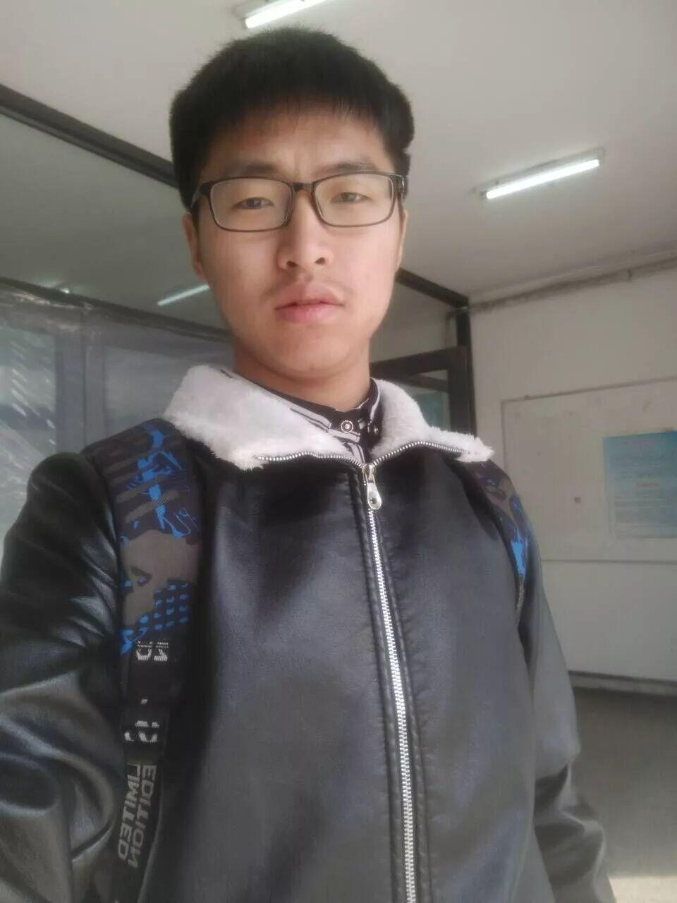
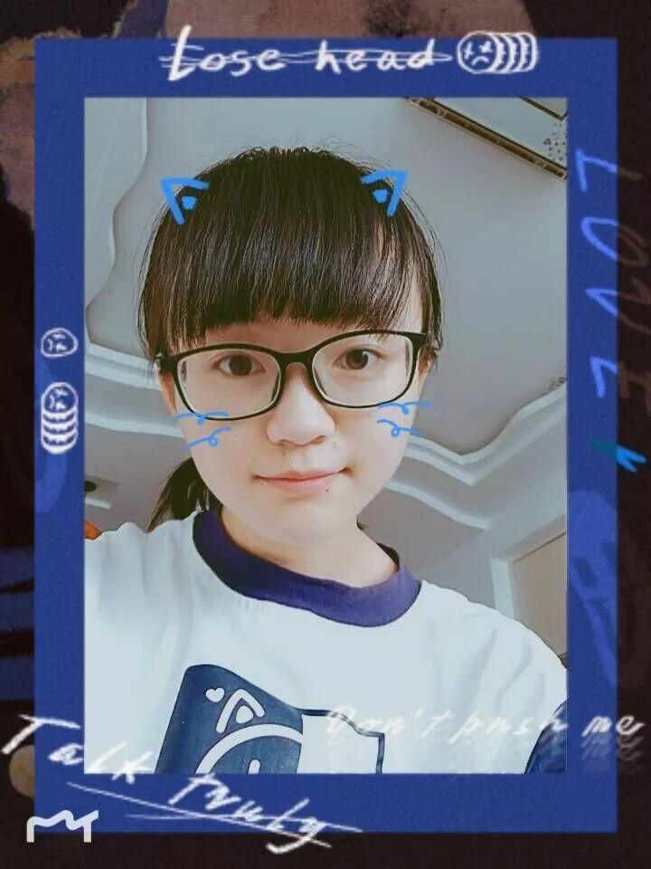
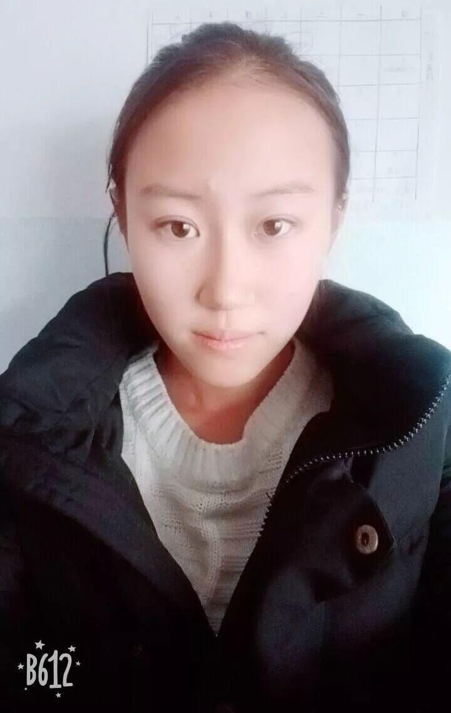
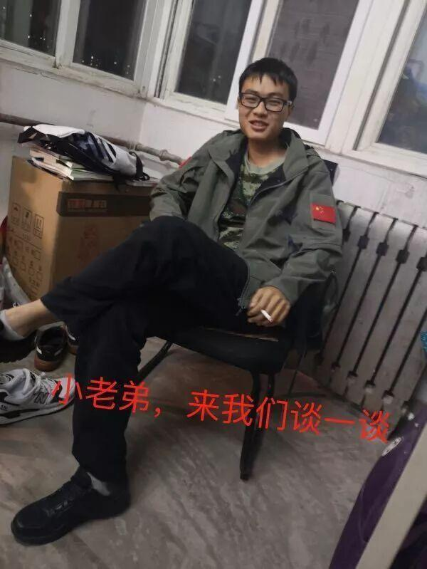

财务部——电协的小算盘
全部
地图
网页
应用
更多
关键词：沈理电协财务部
沈理电协财务部的主要职责是什么？的搜寻结果
1个回答-
提问时间：2018年12月10日
[最佳回答] 亲爱的同学，你好。
财务部的主要职责分别是：
1，与社联财务部对接，负责每次活动费用的申请，以及每月账单的制作与上交。
2，负责采购社团日常活动所需的物资。
3，负责社团各项活动费用的发票开取与保存。
4，负责登记社团活动所支出的费用记录归纳，并且负责社团物资的摆放与整理。
AlexBoogie 9999……999条好评
17届干事简介
推送作品
专利简介
我是来自信息科学与工程的刘艺，电协财务部的一名干事。希望电协越来越好。

马翔，乐观向上，活泼好动。爱好：听音乐，健身，看有兴趣的小说

我是17届的财务部干事徐婷婷，来自信息学院计算机专业。遇见大家很开心，希望以后和大家相处得更好！
18届萌新干事简介
王安棋_自述

王安棋，来自材料院金属材料工程专业，喜欢羽毛球，喜欢跑步。大学四年，希望我能不负青春，遇见更好的自己！（多么温柔可爱的小姐姐，和我一样(✿◡‿◡)）
|热爱运动|小姐姐|积极向上|
景泽浩_自述
景泽浩，自动化与电气工程学院，自动化专业，单身(✿◡‿◡)（划重点了啊！），来自河南省濮阳市。喜欢所有很厉害的东西（例如：无人机）最大的想法是自己造一架无人机。希望在未来向电协的各位大佬学习，成为下一年的小大佬😁
为十年电协，Fighting！
|单身可撩|充满理想|勤奋努力|
金子尧_自述

姓名:金子尧
专业:电子信息科学与技术
家乡:辽宁省开原市
性格:好动，开朗，活泼，阳光
擅长:轮滑，word，想象力，写作
爱好:动漫，小说，音乐
座右铭:切断不必要的后路!
（贼正式，贼有仪式感的小哥哥o(*￣▽￣*)ブ）
|阳光开朗|颜值担当|活泼好动|
苑俊茹_自述
我是来自财务部的苑俊茹，喜欢学习物理，平时喜欢听Image Dragons歌，看小李子的电影，希望在以后的日子里能和大家和谐相处，共同努力！（真的很佩服喜欢学物理的女孩纸。(_ _)。）
|热爱生活|热爱学习|聪明伶俐|
马洋_自述

马洋 机械工程学院机自13班 贵州安顺人。爱好：军事与战争。性格：平稳。 （这姿势，这言语，这爱好，估计以后就会成为财务部的大佬😂要成为大佬的人，连自我介绍都是这么的简洁😄）
|未来可期|霸气侧漏|风流倜傥|
电协寄语
感谢17届的小哥哥小姐姐们已经陪伴电协度过了一年温暖的时光，以后的日子里，我们会携手并进，为电协创造更大的辉煌👊！
2018
18届刚进入财务部的小干事们，你们要用自己的努力去证明自身的价值，用成就去博得大家的认可，为了自己，为了电协，加油💪！
编辑——杜遇涵
【联系方式】


长按关注